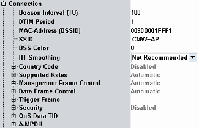
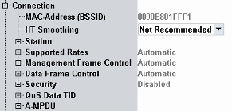
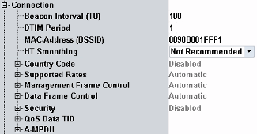
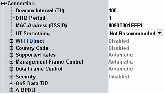
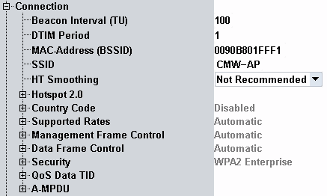

Connection Settings
The available connection settings depend on the operation mode as shown in the following figures.

Connection settings (AP mode, IEEE 802.11ax)

Connection settings (station mode)

Connection settings (IBSS mode)

Connection settings (Wi-Fi Direct mode)

Connection settings (Hotspot 2.0 mode)
The connection settings are described in the following sections.
Contents